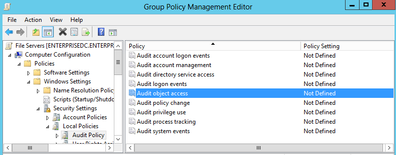
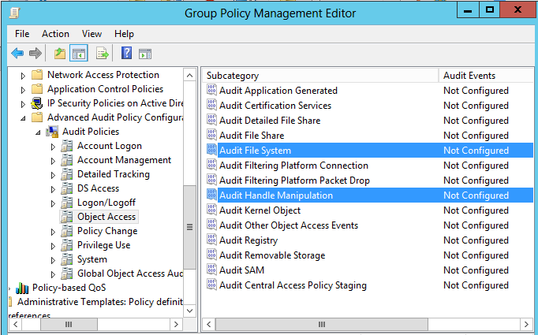

You receive a report containing incorrect data or no data at all. In the attached
warning.txt file or in Sessions you can find the following warning
messages:
- "Auditing of Object Access Success and Auditing of Object Access Failure is not enabled for this Server"
- "[WARNING] Your default audit settings on the following shares may prevent the "Who Changed" and "When Changed" fields from being reported correctly"
The problem occurs if the default audit settings on file shares prevent collection and
storage of information required for Netwrix Auditor.
Configure audit settings on file shares:
- Navigate to the target file share, right-click it and select Properties.
- In the <Share_Name> Properties dialog, select the Security tab and click Advanced.
- In the Advanced Security Settings for <Share_Name> dialog, navigate to the Auditing tab, select Everyone (or another user-defined group containing users that are granted special permissions) and click Edit.
-
Depending on the OS, perform the following steps:
-
Pre-Windows Server 2012:
- In a separate Advanced Security Settings for <Share_Name> dialog, select Everyone and click Edit. You can specify any other user group, but in this case netwrix Auditor will send emails with warnings on incorrect audit configuration. This will not affect the Reports functionality and the product will only monitor user accounts that belong to the selected group.
-
In the Auditing Entry for <Share_Name> dialog, select
Successful and Failed next
to the following options:
-
To monitor successful read access and failed read access attempts:
- "List Folder / Read Data
-
To monitor successful modifications and failed modification attempts:
- Create Files / Write Data
- Create Folders / Append Data
- Write Attributes
- Write Extended Attributes
- Delete Subfolders and Files
- Delete
- Change Permissions
- Take Ownership
-
To monitor successful read access and failed read access attempts:
- Make sure that Apply onto is set to "This folder, subfolders and files", and Apply these auditing entries to objects and/or containers within this container only is cleared.
-
Windows Server 2012:
- In the Auditing Entry for <Share_Name> dialog, set Type to "All" and Applies to to "This folder, subfolder and files".
-
Click Show advanced permissions and select the following
options:
-
To monitor successful read access and failed read access attempts:
- "List Folder / Read Data
-
To monitor successful modifications and failed modification attempts:
- Create Files / Write Data
- Create Folders / Append Data
- Write Attributes
- Write Extended Attributes
- Delete Subfolders and Files
- Delete
- Change Permissions
- Take Ownership
-
To monitor successful read access and failed read access attempts:
- Make sure that the Only apply these auditing settings to objects and/or containers within this container check-box is cleared.
-
Pre-Windows Server 2012:
After you have configured audit settings on the file shares, make sure that you have
specified the types of events you want to monitor in the Audit object access policy.
To configure the Audit Object Access policy:
- Navigate to Start --> Programs --> Administrative Tools --> Group Policy Management.
- Expand the Domains node, right-click the <Domain_Name> node, then select New Organizational Unit and specify the unit"s name (for example, File Servers).
- Right-click the newly created Organizational Unit and select the "Create a GPO in this domain and Link it here' option. In the New GPO dialog type "File Servers" in the Name entry field and click OK.
- Right-click the newly created File Servers GPO and select Edit. In the Group Policy Management Editor dialog, navigate to: Computer Configuration --> Policies --> Windows Settings --> Security Settings --> Local Policies --> Audit Policy. 
- In the right pane, double-click the Audit object access policy. Select the Success check-box to monitor successful read/modification attempts and the Failure check-box to monitor failed read/modification attempts.
- Navigate to Start --> Administrative Tools --> Active Directory Users and Computers. Click the Computers node and move your monitored file server(s) from the right pane to the newly created File Servers organizational unit.
- On the file server(s), navigate to Start -->Run and launch command prompt (cmd). Run gpupdate /force to update the Group Policy.
- Use the Resultant Set of Policy (RSoP) snap-in, to ensure that your settings are not overwritten by other Group Policies.
For Microsoft Windows file servers running Windows Vista and above, you can configure the
advanced audit policy. Via advanced audit policy you can manage auditing at a detailed
level, which helps you avoid saving unnecessary data to your event logs.
To configure advanced audit policy, perform the following steps:
- Navigate to Start --> Programs --> Administrative Tools --> Group Policy Management.
- Expand the Domains node, right-click the <Domain_Name> node, then select New Organizational Unit and specify the unit"s name (for example, File Servers).
- Right-click the newly created Organizational Unit and select the "Create a GPO in this domain and Link it here' option. In the New GPO dialog type "File Servers" in the Name entry field and click OK.
- Right-click the newly created File Servers GPO and select Edit. In the Group Policy Management Editor dialog, navigate to: Computer Configuration --> Policies --> Windows Settings --> Security Settings --> Advanced Audit Policy Configuration --> Audit Policies --> Object Access. 
- In the right pane, double-click the Audit File System and Handle Manipulation policies and select Success and/or Failure check-boxes.
- Navigate to Start --> Administrative Tools --> Active Directory Users and Computers. Click the Computers node and move your monitored file server(s) from the right pane to the newly created File Servers organizational unit.
- On the file server(s), navigate to Start -->Run and launch command prompt (cmd). Run gpupdate /force to update the Group Policy.
- Use the Auditpol command to verify that your settings are have been set locally on the target file servers. To do this, navigate to Start -->Run and then type cmd. Type auditpol /get /category:* press Enter to run the command.